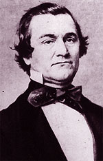

|

|

|
|
|
Diplomat, politician, and orator William Lowndes Yancey was
born in Warren County, Virginia in 1814 to Benajmin Cuworth
Yancey and Caroline Bird. Yancey's father died when he was
very young, and soon thereafter his mother married
Presbyterian Reverend Nathan S.S. Beman. In 1823, Beman
decided to move the family to New York, where he became
involved in the abolitionist movement. Beman's dignified
public persona as a reverend and social reformer was in
marked contrast to his conduct in private, where he verbally
and physically abused his wife. Young William grew to hate
his stepfather's hypocrisy, which he equated with his
abolitionism.
In 1833, Yancey returned to the South. He dropped out of
Williams College in Massachusetts, and moved to Greenville,
South Carolina. While in Greenville, Yancey tried his hand
at a number of professions. He edited the Greenville
Mountaineer, where he regularly attacked John C. Calhoun for
his secessionist rhetoric. He read law under Benjamin F.
Perry, and was admitted to the bar. He also became a
plantation owner after marrying Sarah Carolina Earle in
1835, and gaining control of her 35 slaves. The young couple
settled in Alabama.
During the latter part of the 1830s, Yancey suffered a
number of misfortunes. He lost a great deal of money in the
Panic of 1837. In 1838, he was convicted of manslaughter
after killing his wife's uncle during an argument. In 1839,
shortly after his release from prison, most of Yancey's
slaves died after an angry neighbor poisoned the well at his
plantation. As a result, he was compelled to return to the
practice of law to support himself and his wife.
In 1840, Yancey decided to become a candidate for
political office. By this time, he had completely reversed
his earlier position, and was an ardent supporter of Calhoun
and his states' rights philosophy. Yancey served in
Alabama's legislature from 1841-1842 and in the state's
senate from 1843-1844. He was then elected to two terms in
the U.S. House of Representatives. Yancey's first speech as
a Congressman so enraged one of his colleagues that a duel
was arranged, although no blood was shed. Yancey quickly
grew weary of the need to constantly compromise his beliefs,
and despite being re-elected he resigned his seat in 1846.
Yancey did not return to politics before the Civil War
started. Instead, he became a devoted and forceful speaker
on behalf of secession. He wrote letters and delivered
hundreds of speeches on behalf of the cause, earning a name
as the "prince of the fire-eaters." In 1860, Yancey led the
group of southern delegates who abandoned the Democratic
convention in Charleston. In 1861, he led the convention
that took Alabama out of the Union.
Despite Yancey's prominence, he and other fire-eaters
were not offered important positions in the Confederate
government. Jefferson Davis needed to convince the states of
the Upper South to join the Confederacy, and that goal was
best served if moderates appeared to be in control. To keep
Yancey quiet, Davis gave him responsibility for leading a
delegation to England to try and secure recognition for the
Confederacy. The mission failed, in part because the
Confederacy had little leverage and in part because the
hot-tempered Yancey was not a very good diplomat.
Yancey returned to the Confederacy in 1862, and was
elected to a seat in the Confederate Congress. Convinced
that Jefferson Davis had set him up to fail in England, he
became one of the administration's harshest critics. Yancey
attacked the president for seizing too much power and for
failing to promote enough Alabamians to generalships. Yancey
never received satisfaction on either of these issues,
although he was able to help stop the Confederacy from
establishing a supreme court in 1863. Shortly after this
victory, Yancey was reduced to invalidism by the kidney
disease he had suffered from for many years. He died in
Montgomery in July of 1863, just before his 49th birthday.
Source: Joan Waugh, ed., Facts on File Encyclopedia of American
History: Civil War and Reconstruction, 1856 to 1869 (New York: Facts on
File, 2003), 401-402.
|